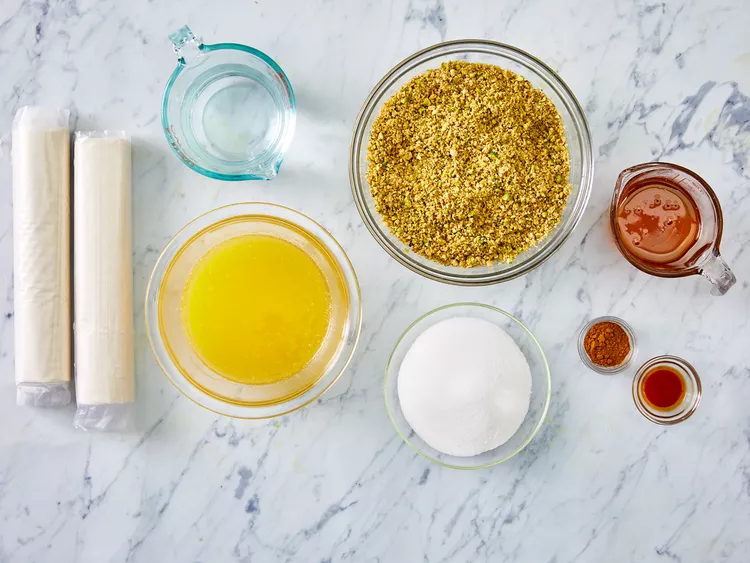
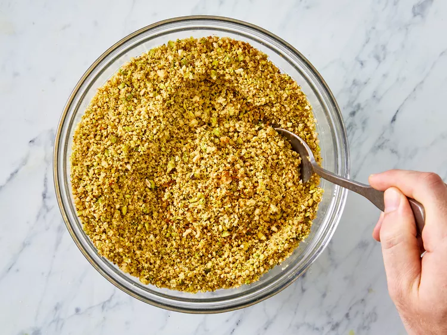
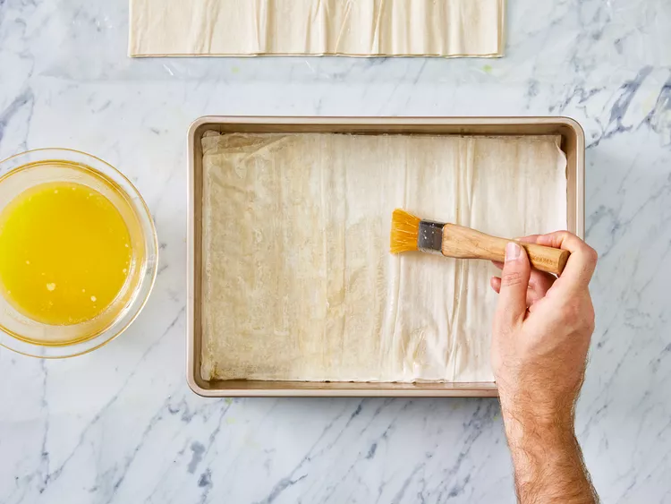
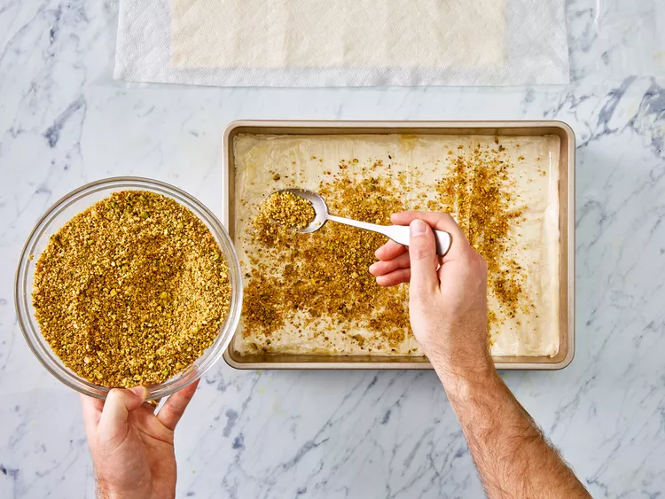
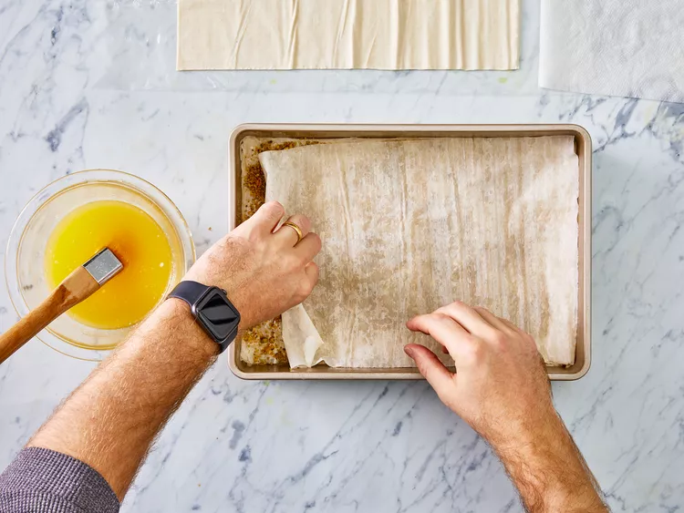
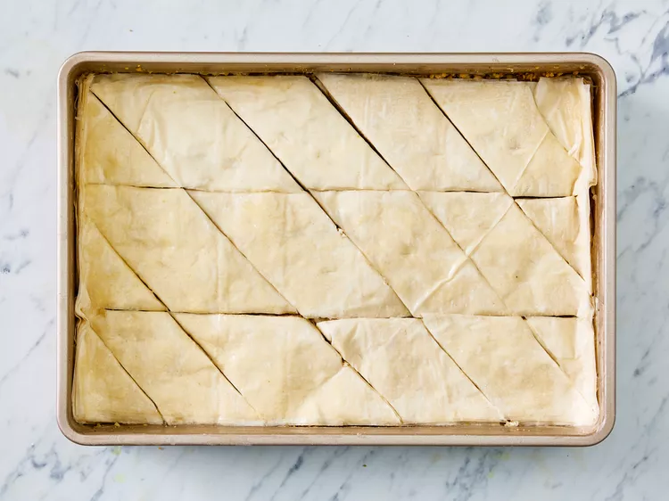
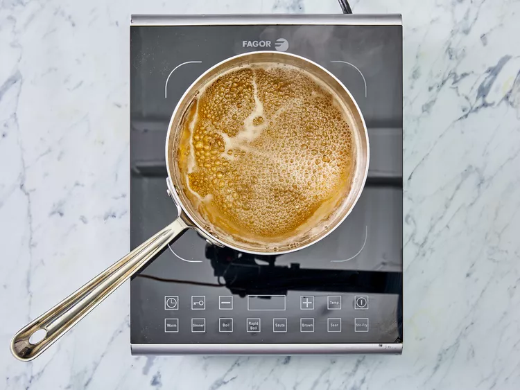
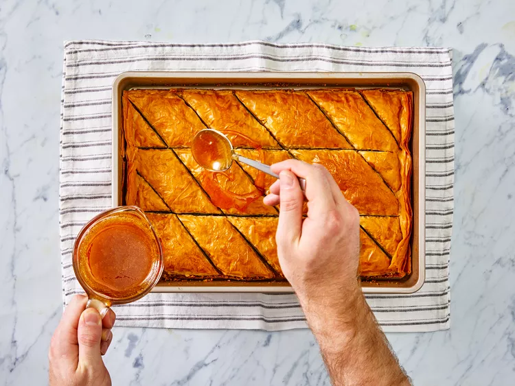
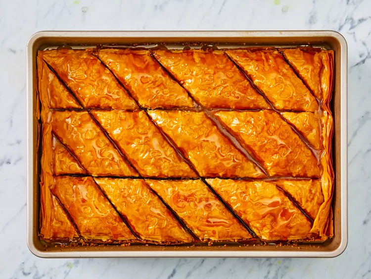
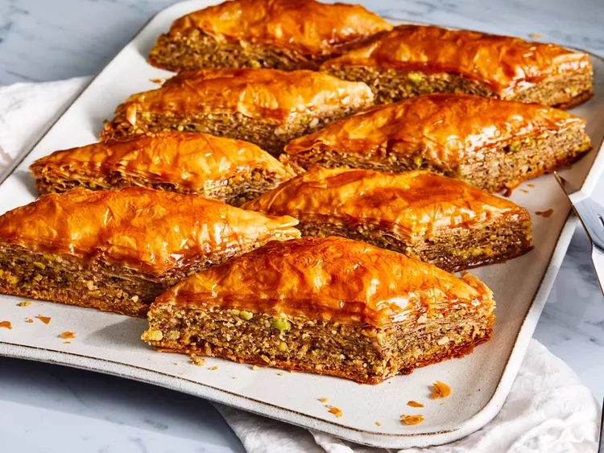

Baklava is a delicious Greek dessert made up of layers of crispy phyllo dough, honey and nuts that's so easy to make. A Greek friend showed her how to make this fabulous recipe and then I put it on this website. Hehehe...

Believe it or not, you can make Greek restaurant-worthy baklava in the comfort of your own kitchen — and it's actually not that hard! This top-rated baklava recipe, which is surprisingly approachable for beginner bakers, has racked up almost 2,000 rave reviews from the Allrecipes community.
Baklava is a traditional pastry known for its sweet, rich flavor and flaky texture. It consists of phyllo (or filo) dough, nuts, spices, and a sugary syrup.
Pronounce "baklava" like "bah-klah-vah." The stress is placed on the first syllable.
Though baklava is often associated with Greek restaurants now, its exact origins are unclear. Food historians think modern baklava may have been invented in Turkey during the Ottoman Empire, then modified in Greece. However, the technique of layering unleavened bread with nuts and honey can be traced back as far as the 8th century B.C.E. during the Assyrian Empire.
Here's what you need to make the best baklava of your life:
Make your own phyllo pastry dough or buy frozen phyllo dough at the store.
Chopped walnuts, pistachios, or a mixture of both are traditionally used. Hazelnuts and/or pecans would also work.
Not only does butter add richness and flavor, it keeps the phyllo sheets moist and soft. It also helps the sheets stay together.
Cinnamon is responsible for baklava's signature warmth.
A sweet syrup — made from water, sugar, vanilla extract, and honey — is poured over the baked baklava layers, bringing the delicious dessert together.

Even though making baklava can be a bit time-consuming, it's probably not as hard as you think. You'll find the full recipe below, but here's a brief overview of what you can expect.
Stack eight sheets of phyllo dough, brushing with butter between each layer, to create a sturdy base. Sprinkle it with a mixture of chopped nuts and cinnamon. Top with two sheets of phyllo dough and follow with the nut mixture. Repeat this process a few more times, until the nut mixture is gone. Top with about eight more layers of phyllo, buttering each layer.
Cut the baklava into diamond or square shapes. Be sure to cut all the way to the bottom of the pan. Bake until golden and crisp.
Boil water and sugar until sugar is melted. Add vanilla and honey. Remove the baklava from the oven and immediately pour syrup over it. Let cool before serving.
Baklava is super sugary, so it has a relatively long shelf-life. It will last for about two weeks stored in an airtight container. Keep it in the pantry if you like your baklava crispy. If you like it chewy, opt for the fridge.
Yes, you can definitely freeze baklava. Just let it cool completely, wrap it in a layer of storage wrap, and then a layer of aluminum foil. Follow with another layer of aluminum foil for added protection. Freeze for up to three months. Thaw in the fridge overnight.
Gather all ingredients.
Preheat the oven to 350 degrees F(175 degrees C). Butter the bottoms and sides of a 9x13-inch pan.
Chop nuts and toss with cinnamon. Set aside.
Unroll phyllo dough. Cut whole stack in half to fit pan. Cover phyllo with a dampened cloth to keep from drying out as you work. Place two sheets of dough in pan, butter thoroughly. Repeat until you have 8 sheets layered.
Sprinkle 2 to 3 tablespoons of nut mixture on top. Top with two sheets of dough, butter, nuts, layering as you go. The top layer should be about 6 to 8 sheets deep.
 Using a sharp knife cut into diamond or square shapes all the way to the bottom of the pan. You may cut into 4 long rows then make diagonal cuts. Bake for about 50 minutes until baklava is golden and crisp.
Make sauce while baklava is baking. Boil sugar and water until sugar is melted. Add vanilla and honey. Simmer for about 20 minutes.
Remove baklava from the oven and immediately spoon sauce over it. Let cool.
Serve in cupcake papers. This freezes well. Leave it uncovered as it gets soggy if it is wrapped up
Enjoy!
